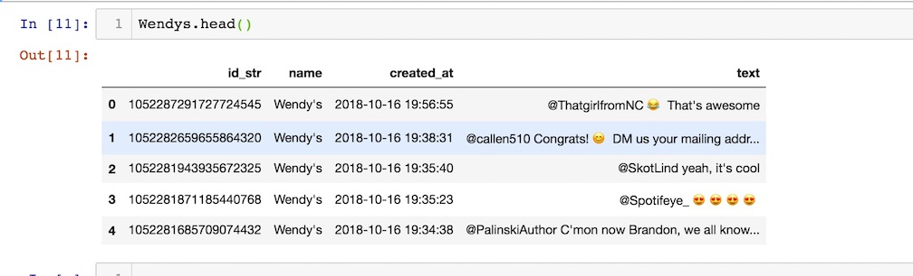
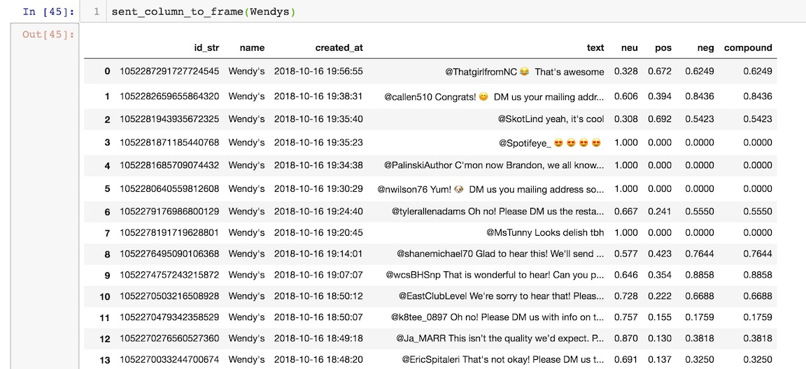

<!DOCTYPE html>
<html lang="en">

  <head>

    <meta charset="utf-8">
    <meta name="viewport" content="width=device-width, initial-scale=1, shrink-to-fit=no">
    <meta name="description" content="">
    <meta name="author" content="">

    <title>Andreas Taylor/title>

    <!-- Bootstrap core CSS -->
    <link href="vendor/bootstrap/css/bootstrap.min.css" rel="stylesheet">

    <!-- Custom fonts for this template -->
    <link href="vendor/fontawesome-free/css/all.min.css" rel="stylesheet" type="text/css">
    <link href='https://fonts.googleapis.com/css?family=Lora:400,700,400italic,700italic' rel='stylesheet' type='text/css'>
    <link href='https://fonts.googleapis.com/css?family=Open+Sans:300italic,400italic,600italic,700italic,800italic,400,300,600,700,800' rel='stylesheet' type='text/css'>

    <!-- Custom styles for this template -->
    <link href="css/clean-blog.min.css" rel="stylesheet">

  </head>

  <body>

    <!-- Navigation -->
    <nav class="navbar navbar-expand-lg navbar-light fixed-top" id="mainNav">
      <div class="container">
        <a class="navbar-brand" href="index.html">Andreas Taylor</a>
        <button class="navbar-toggler navbar-toggler-right" type="button" data-toggle="collapse" data-target="#navbarResponsive" aria-controls="navbarResponsive" aria-expanded="false" aria-label="Toggle navigation">
          Menu
          <i class="fas fa-bars"></i>
        </button>
        <div class="collapse navbar-collapse" id="navbarResponsive">
          <ul class="navbar-nav ml-auto">
            <li class="nav-item">
              <a class="nav-link" href="index.html">Home</a>
            </li>
            <li class="nav-item">
              <a class="nav-link" href="about.html">About</a>
            </li>
            <li class="nav-item">
              <a class="nav-link" href="post.html">Projects</a>
            </li>
            <li class="nav-item">
              <a class="nav-link" href="contact.html">Contact</a>
            </li>
          </ul>
        </div>
      </div>
    </nav>

    <!-- Page Header -->
    <header class="masthead" style="background-image: url('img/wendys.jpg')">
      <div class="overlay"></div>
      <div class="container">
        <div class="row">
          <div class="col-lg-8 col-md-10 mx-auto">
            <div class="post-heading">
              <h1>Sentiment Analysis with NLTK</h1>
              <h2 class="subheading">and the Vader Lexicon</h2>
              <span class="meta">Posted by
                <a href="#">Andreas Taylor</a>
                on Oct 8, 2018</span>
            </div>
          </div>
        </div>
      </div>
    </header>

    <!-- Post Content -->
    <article>
      <div class="container">
        <div class="row">
          <div class="col-lg-8 col-md-10 mx-auto">

            <p>When doing Natural Language Processing the researcher may want to be able to use automated techniques to determine the sentiment of the text. Luckily for us one of the many tools available in the <a href="https://pypi.org/project/vaderSentiment/">Natural Language Toolkit</a> is the VADER Sentiment Analyser module. The VADER (Valence Aware Dictionary and sEntiment Reasoner) is lexicon and rule-based analysis tool that is essentially for looking at Social Media and even takes into account Emojis! Let’s look at how we can use this tool.

              <p>In the previous blog I collected Twitter data into a dataframe using Tweepy and now we will use the SentimentAnalyzer module to create 4 columns for the results of the sentiment analysis for that Tweet.  For this blog I made a smaller dataframe (less columns) for clarity and I used the Wendy’s Twitter account for analysis. This account is famous for being very vocal and somewhat insulting despite it’s corporate ownership. Once we have the dataframe we can make a function to analyze the Tweets made by this account. Wendy’s made 3210 Tweets in one month with a total of 150K tweets! That’s 100 Tweets a day and it seems like that might be more like a team of people than a single account holder.

               <p<script src="https://gist.github.com/DataSnek/d840e23c7daa25e1189ee76c92326813.js"></script>

                <p>Now let’s look at the dataframe

                 

                  <p>Next we need to create a function that analyzes the sentiment of every Tweet’s text and makes a column in the dataframe for it the amount positive, negative and neutral. But first let’s look at how the sentiment module works outside of the function.

                   <script src="https://gist.github.com/DataSnek/2200dea6ada8f319e1fc5b33ed32cb19.js"></script>

                    <p>Along with the positive, negative and neutrality scores the  analyzer gives you a value for “compound” which is the amount of detected polarity. Now the next step is to put the values into a dataframe. We simply need to go down the column and get these 4 values for a single row, then put them into arrays which we put into the dataframe at the very end.

                     <script src="https://gist.github.com/DataSnek/f663496c840118f58d42d96508f8b118.js"></script>

                      <p> Now lets look at the scores

                       

                       <p> In the next blog we will be looking at Twitter again for graphing network connections!

                       </div>
                     </div>
          </div>
        </div>
      </div>
    </article>

    <hr>

    <!-- Footer -->
    <footer>
      <div class="container">
        <div class="row">
          <div class="col-lg-8 col-md-10 mx-auto">
            <ul class="list-inline text-center">
              <li class="list-inline-item">
                <a href="#">
                  <span class="fa-stack fa-lg">
                    <i class="fas fa-circle fa-stack-2x"></i>
                    <i class="fab fa-twitter fa-stack-1x fa-inverse"></i>
                  </span>
                </a>
              </li>
              <li class="list-inline-item">
                <a href="#">
                  <span class="fa-stack fa-lg">
                    <i class="fas fa-circle fa-stack-2x"></i>
                    <i class="fab fa-facebook-f fa-stack-1x fa-inverse"></i>
                  </span>
                </a>
              </li>
              <li class="list-inline-item">
                <a href="#">
                  <span class="fa-stack fa-lg">
                    <i class="fas fa-circle fa-stack-2x"></i>
                    <i class="fab fa-github fa-stack-1x fa-inverse"></i>
                  </span>
                </a>
              </li>
            </ul>
            <p class="copyright text-muted">Copyright &copy; Andreas Taylor 2018</p>
          </div>
        </div>
      </div>
    </footer>

    <!-- Bootstrap core JavaScript -->
    <script src="vendor/jquery/jquery.min.js"></script>
    <script src="vendor/bootstrap/js/bootstrap.bundle.min.js"></script>

    <!-- Custom scripts for this template -->
    <script src="js/clean-blog.min.js"></script>

  </body>

</html>
